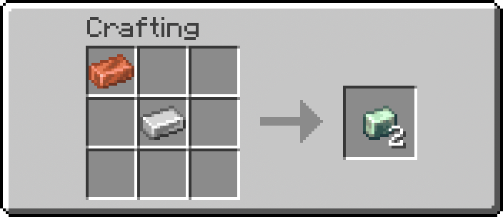
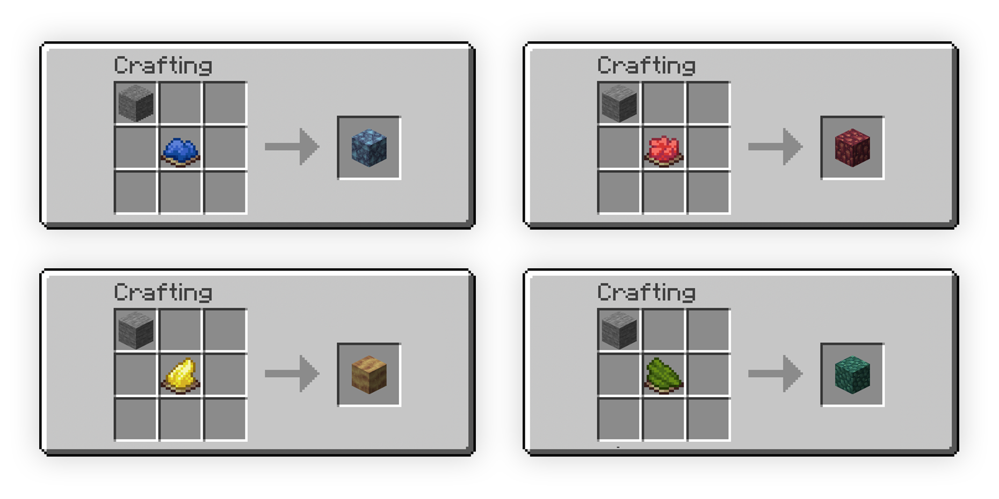

Create Tweaks: Retro-Generation Recipes
A lightweight Minecraft datapack designed for the Create Mod ecosystem that introduces balanced, vanilla-friendly crafting recipes for custom world-generation resources. It serves as a seamless quality-of-life fix for existing worlds where traveling thousands of blocks to find new chunks isn't ideal.

Features
- Retroactive Compatibility: Allows players to obtain Create mod natural materials without needing to generate new, unexplored chunks.
- Resource Conversion: Adds direct crafting recipes for key progression blocks: Asurine, Crimsite, Ochrum, Veridium, and Zinc Ingots.
- Instant Recipe Discovery: Automatically unlocks all custom recipes in the player's vanilla Recipe Book the moment the world or server loads.
- Zero Performance Impact: Leverages standard data-driven JSON mechanics with optimized function loops to keep gameplay entirely lag-free.

Technical Architecture
The core functionality leverages Minecraft's native data-driven engine to override and inject custom recipes and logic hooks:
- Recipe Framework: Built using standard
minecraft:crafting_shapelessJSON recipes inside thedata/createtweaks/recipe/namespace, making ingredients easily modifiable. - Initialization Loop (
load.mcfunction): Hooks into the global#minecraft:loadevent to execute a/recipe givecommand instantly for all active players when the server boots or reloads. - Event Loop (
tick.mcfunction): Hooks into the#minecraft:tickarray (running 20 times per second). It is intentionally left unbloated to ensure optimal server performance while leaving room for custom developer logic. - Cross-Version Scalability: Engineered with structural flexibility, allowing the pack format ranges and namespace structures (
recipe/vsrecipes/) to be manually refactored for legacy Minecraft variants.
Getting Started
Prerequisites
- A Minecraft client running a compatible version (Supports 1.21.8 up to modern community forks like Create Fly on Modrinth).
- The Create Mod (or Create Fly) installed on your client or server.
Installation
- Download the datapack zip file/folder from Modrinth or Github Releases.
- Navigate to your Minecraft world folder (
saves/<YourWorldName>/). - Open the
datapacksfolder and drop thecreatetweakszip file/folder inside. - Open your world (or type
/reloadin the chat if you are already in-game) to initialize the recipes.